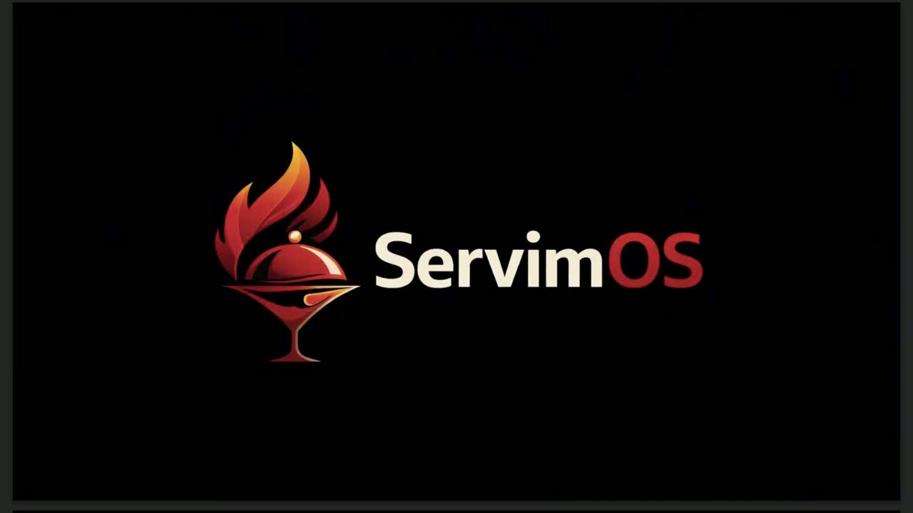

Accesible desde el inicio
Digitalización sin inversión inicial exagerada ni instalaciones pesadas.
Control operativo para restaurantes
ServimOS no es solo un punto de venta. Es una forma más simple de controlar pedidos, mesas, cocina, caja, permisos y reportes desde un solo flujo, sin instalaciones caras ni sistemas pesados para tu equipo.

Primero mira el recorrido
Antes de agendar una llamada, mira cómo funciona ServimOS en una operación real: acceso inicial, configuración, menú, pedidos, cocina, caja y control diario. Si te hace sentido, lo aterrizamos con tus mesas, carta, roles y sucursales.
Qué resuelve
Muchos restaurantes pierden tiempo, margen y control por fugas pequeñas: pedidos dispersos, errores entre sala y cocina, cobros poco claros, permisos mal definidos y herramientas separadas que no se hablan entre sí.
Digitalización sin inversión inicial exagerada ni instalaciones pesadas.
Pedidos por QR, links para WhatsApp, comandas y cocina desde el mismo flujo.
Roles para administrador, caja, cocina, barra y meseros sin bloquear al equipo.
Menos retrabajo, menos pedidos perdidos y más venta directa para el negocio.
Para quién es
ServimOS está pensado para restaurantes, hamburgueserías, cafeterías, dark kitchens y negocios que necesitan digitalizarse usando los dispositivos que ya tienen.
Módulos principales
Captura pedidos internos, pagos, estados y seguimiento de cada comanda.
El cliente ordena desde la mesa y el pedido entra al flujo operativo.
Canal directo para vender sin depender completamente de apps de delivery.
Estados por área, tiempos, estaciones configurables y comandas listas.
Permisos por perfil para proteger caja, reportes, configuración y datos.
Lectura de ventas, operación, tiempos, rentabilidad y fugas a corregir.
Por qué existe ServimOS
ServimOS nace para ayudar a negocios de comida a digitalizar su operación sin depender de instalaciones costosas, sistemas difíciles de usar o plataformas que se comen el margen. El objetivo es simple: pedidos, mesas, cocina, caja, roles y reportes desde una sola plataforma práctica.
Del primer acceso a la operación diaria
La intención es simple: que primero entiendas el valor, veas el recorrido y después decidas si vale la pena revisar tu operación en una demo.
Modelo SaaS
Por menos de lo que muchos negocios pierden en errores, comisiones o herramientas separadas, puedes centralizar pedidos, QR, comandas, cocina, caja, roles y reportes.
Incluye una sucursal con operación principal: mesas, comandas, QR, KDS, caja y reportes.
ServimOS en acción
Podemos montarte un recorrido con tus mesas, carta, roles y sucursales para validar cómo se vería la operación antes de contratar.